攻略大全 / 心金 / 魂银（详细图文） / 地图总览
烟墨市 → 46号道路
第 13 节 · 主线 · 途经 烟墨道馆、龙之穴、45号道路、黑暗洞穴
烟墨市
烟墨市位于城都东北部，在冰雪小径和45号道路之间，是一座直接凿在岩壁上的神秘山村。很多居民后来都成了龙属性专家，也许是因为城市底下就是一个叫龙穴的大洞窟。只有得到道馆馆主许可的人，才能穿过道馆后面的湖进入这个洞窟。
可遇到的宝可梦
- 冲浪
 鲤鱼王冲浪 · Lv.2-20 · 100%
鲤鱼王冲浪 · Lv.2-20 · 100%- 钓鱼
- 鲤鱼王破旧钓竿 · Lv.10 · 85%
 蚊香蝌蚪破旧钓竿 · Lv.10 · 15%
蚊香蝌蚪破旧钓竿 · Lv.10 · 15%- 鲤鱼王好钓竿 · Lv.20 · 60%
- 蚊香蝌蚪好钓竿 · Lv.20 · 40%
- 特殊
 嘟嘟利交换 · 与换出去的宝可梦同等级 · 1 只
嘟嘟利交换 · 与换出去的宝可梦同等级 · 1 只
道具
 柔软沙子星期六在道馆东南边的台阶上找 Santos
柔软沙子星期六在道馆东南边的台阶上找 Santos- 瞌睡缎带星期六找 Santos，见过所有「星期兄妹」之后
- 烟雾球交换得到的嘟嘟利 Doris 携带
- 努力缎带最东边房子里的女孩给予，队伍第一只宝可梦的努力值达到 510 时
交换宝可梦
去东边的房子，会找到一个想交换宝可梦的女孩。她愿意用自己的嘟嘟利换一只雌性哈克龙。哈克龙只能用高级钓竿钓到，但它进化前的迷你龙在龙穴里就能找到。
努力的证明
最东边房子里的另一个女孩会评价你队伍第一只宝可梦为变强付出了多少努力。如果它的潜力已经发挥到极限、努力值累计达到 510，她会给这只宝可梦颁发努力缎带。
招式遗忘者和招式教学的家
南边的房子住着一位叫「招式遗忘者」的男人。他的免费服务可以让宝可梦忘记一个招式。这对删除秘传招式特别有用，因为秘传招式平时是忘不掉的。
屋里还住着另外三个人，每个人都能教特定的招式。
- 站在厨房水槽边的男人是「招式狂」。给他一片心之鳞片，他就能帮宝可梦重新想起以前忘掉的任何招式。
- 那位老奶奶叫 Wilma 奶奶。给她看一只和训练家关系很好的龙属性宝可梦，她会教它龙属性的究极招式：流星群。
- 那位老爷爷能评价完全进化的最初伙伴宝可梦。如果它和训练家关系很好，他会教它对应属性的究极招式：疯狂植物、爆炸烈焰或加农水炮。
烟墨道馆
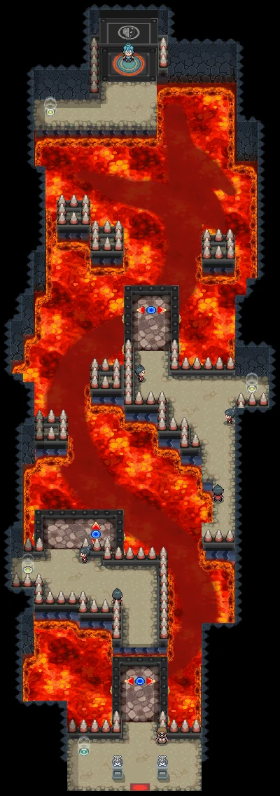
| 烟墨市宝可梦道馆 馆主：小椿 受龙之祝福的使用者 |
烟墨道馆专精龙属性宝可梦。龙属性招式对龙属性效果绝佳，而龙属性宝可梦怕龙和冰属性招式。
一进门，道馆向导就提醒你地板不稳，宝可梦必须待在精灵球里。道馆里有两个装着尖刺的固定平台，还有三个小石台。每个石台上都有一个让平台旋转的蓝色按钮，以及两个让它朝相应方向移动的箭头按钮。挑战者要用这些按钮让石台穿过熔岩，前往馆主那里。
| 谜题 | 解法 |
|---|---|
| 石台 1 | 左箭头、中间按钮、中间按钮、右箭头 |
| 石台 2 | 上箭头、中间按钮、右箭头、中间按钮、中间按钮、右箭头 |
| 石台 3 | 左箭头、中间按钮、中间按钮、右箭头、中间按钮、上箭头、上箭头、上箭头、中间按钮、右箭头、中间按钮、上箭头、上箭头 |
小椿先派出暴鲤龙，它是飞行属性，被电属性攻击打会受巨大伤害。她的两只哈克龙招式几乎一样，只差一个。她会大字爆炎和水流尾，打空木博士三只宝可梦中的两只时占优势。她的刺龙王带有水属性，只怕龙属性攻击。带上治麻痹的道具，并勤用回血道具，免得被刺龙王的破坏光线打个措手不及。
训练家
- 精英训练家 Paulo₽2100
 迷你龙 Lv.35迷你龙 Lv.35
迷你龙 Lv.35迷你龙 Lv.35 海刺龙 Lv.35
海刺龙 Lv.35 - 精英训练家 Lola₽2220迷你龙 Lv.35
 哈克龙 Lv.37
哈克龙 Lv.37 - 精英训练家 Cody₽2220
 墨海马 Lv.35海刺龙 Lv.37
墨海马 Lv.35海刺龙 Lv.37 - 精英训练家 Fran₽2280海刺龙 Lv.38
- 精英训练家 Mike₽2280哈克龙 Lv.38
道馆馆主 小椿 奖金 ₽4920
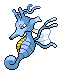
刺龙王Lv.41 · 水 / 龙对战结束后，小椿不敢相信自己输了。她承认输了，却说你还没准备好挑战宝可梦联盟，坚持要你去接受「龙之试炼」。她告诉你城市底下有个叫龙穴的大洞窟，让你去里面的祠堂。通过试炼才能证明你的实力，到那时她才会把升龙徽章给你。带上会冲浪和潮旋的宝可梦，渡过道馆后面的湖就能到洞口。
龙穴
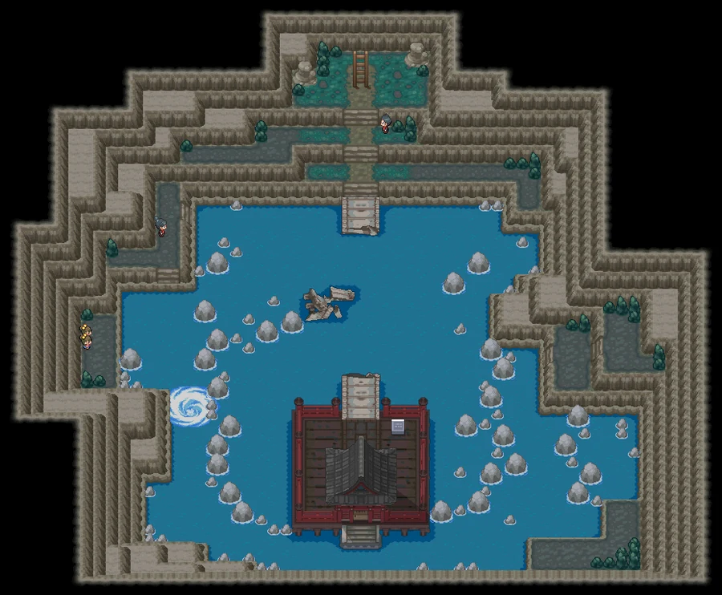
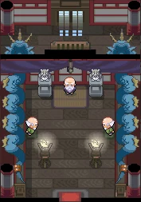
龙穴是烟墨市底下的一个大洞窟。这里是龙属性宝可梦神圣的栖息地，也是城里居民修行、成为龙属性专家的地方。南边的平台上有一座大祠堂。
训练家
- 精英训练家 Kobe₽2220哈克龙 Lv.37
- 精英训练家 Piper₽2100墨海马 Lv.33墨海马 Lv.33海刺龙 Lv.35
- 双胞胎 Clea & Gil₽1120迷你龙 Lv.35迷你龙 Lv.35
可遇到的宝可梦
- 冲浪
- 鲤鱼王冲浪 · Lv.5-20 · 90%
- 迷你龙冲浪 · Lv.5-15 · 10%
- 钓鱼
- 鲤鱼王破旧钓竿 · Lv.10 · 100%
- 鲤鱼王好钓竿 · Lv.20 · 90%
- 迷你龙好钓竿 · Lv.20 · 10%
- 特殊
- 迷你龙赠送 · Lv.15 · 1 只（从小椿那里拿到招式学习器59 后，由龙之长老赠送）
道具
 活力碎片北部区域西侧，精英训练家 Kobe 西边一块孤零零的岩石上（隐藏道具）
活力碎片北部区域西侧，精英训练家 Kobe 西边一块孤零零的岩石上（隐藏道具） 特攻增强剂北部区域东侧，水面上方最低的那一层
特攻增强剂北部区域东侧，水面上方最低的那一层 全满药西北区域，精英训练家 Piper 附近一根孤零零的石笋上（隐藏道具，需要特殊能力）
全满药西北区域，精英训练家 Piper 附近一根孤零零的石笋上（隐藏道具，需要特殊能力） ＰＰ多项全补剂 ×2祠堂平台东南角（隐藏道具，需要特殊能力）
ＰＰ多项全补剂 ×2祠堂平台东南角（隐藏道具，需要特殊能力）
西岸，双胞胎 Clea & Gil 往南几步（需要特殊能力） 龙之牙中东部区域的上层（需要特殊能力）
龙之牙中东部区域的上层（需要特殊能力）- 招式学习器59（龙之波动）北部区域西侧，通过长老的问答后由道馆馆主小椿给予（需要特殊能力）
主洞窟
爬下梯子到主洞窟。和精英训练家 Kobe 对战，拿东南边的特攻增强剂。冲浪往西南，拿西岸的ＰＰ多项全补剂，然后用潮旋平息水面。沿洞窟南墙继续往东，爬上东边的楼梯拿龙之牙。往回走，进入祠堂。
龙之祠堂
试炼
走进祠堂会遇到龙之一族的长老。他看出你是小椿派来的，解释说你要通过一个问答，来看看你对宝可梦的看法。
| 问题 | 答案 | ||
|---|---|---|---|
| 宝可梦对你来说是什么？ | 同伴 | 晚辈 | 朋友 |
| 什么能帮你赢得对战？ | 战术 | 锻炼 | 作弊 |
| 你想和什么样的训练家对战？ | 弱的 | 强的 | 谁都行 |
| 培育宝可梦最重要的是什么？ | 爱 | 暴力 | 知识 |
| 强大的宝可梦和弱小的宝可梦，哪个更重要？ | 强大 | 都重要 | 弱小 |
| 正确答案用粗体标出。 | |||
长老看完你的回答，认定你真心爱护宝可梦。他强调千万不要失去这份信念，它会在宝可梦联盟帮到你。片刻之后小椿走进来，以为你没通过。听说你通过了长老的试炼，她大吃一惊，因为连她自己都没通过。长老训斥她，要她认输并授予升龙徽章，否则就把她的行为告诉阿渡。她只好不情愿地照办；这枚徽章能让所有宝可梦都听你的话，并且能在野外使用攀瀑。她一言不发地离开了祠堂。之后长老提到漩涡群岛，说据说有一只叫洛奇亚的宝可梦住在那里。
小椿在断桥北端附近等你。她为自己的态度道歉，并送你招式学习器59（龙之波动）。你已经集齐城都地区的 8 枚徽章，小椿告诉你下一步就是石英高原的宝可梦联盟。她建议你从若叶镇往东冲浪，但说看你的表情好像还有事没做完。她警告你，不管前面有什么挑战都不要放弃，否则她输给你会更难受。
奖励
通过长老的试炼后，只要队伍里不超过五只宝可梦，随时可以回来。和长老说话，他会把一只迷你龙托付给你，作为认可你实力的证明。如果所有问题都答对了，它会一个它本来学不到的特殊招式：神速；否则它只会瞪眼。
空木博士的请求
离开洞窟时，空木博士会打电话请你去研究所一趟，他有东西要给你。
↓ 下一站：45号道路
45号道路
45号道路是一条从烟墨市周围山区下来的崎岖道路。路多次分开又汇合，高低不平的地形让人无法往北走，所以要来好几次才能走遍所有区域。黑暗洞穴的东边入口在道路北端。路最后在一个小池塘处转向西边，和46号道路相连。
训练家
- 登山男 Erik₽864
 腕力 Lv.24
腕力 Lv.24 隆隆石 Lv.27腕力 Lv.27
隆隆石 Lv.27腕力 Lv.27 - 精英训练家 Ryan₽1620
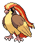
大比鸟 Lv.25 电击兽 Lv.27
电击兽 Lv.27 - 精英训练家 Kelly₽1440
 玛力露 Lv.27
玛力露 Lv.27 卡咪龟 Lv.24卡咪龟 Lv.24
卡咪龟 Lv.24卡咪龟 Lv.24 - 登山男 Parry₽960
 大岩蛇 Lv.30
大岩蛇 Lv.30 - 空手王 Kenji₽672
 豪力 Lv.28
豪力 Lv.28 - 登山男 Timothy₽864
 地鼠 Lv.27
地鼠 Lv.27 三地鼠 Lv.27
三地鼠 Lv.27 - 登山男 Michael₽800
 小拳石 Lv.25隆隆石 Lv.25
小拳石 Lv.25隆隆石 Lv.25 隆隆岩 Lv.25
隆隆岩 Lv.25
可遇到的宝可梦
- 小拳石草丛 · Lv.23 · 30%
- 隆隆石仅心金草丛 · Lv.23, 25, 27 · 40%
- 隆隆石仅魂银草丛 · Lv.23-25 · 55%
 天蝎仅心金草丛 · Lv.24 · 20%
天蝎仅心金草丛 · Lv.24 · 20% 熊宝宝仅魂银草丛 · Lv.20 · 10%
熊宝宝仅魂银草丛 · Lv.20 · 10%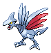
盔甲鸟仅魂银草丛 · Lv.27 · 5% 小小象仅心金草丛 · Lv.20 · 10%
小小象仅心金草丛 · Lv.20 · 10%- 冲浪
- 鲤鱼王冲浪 · Lv.2-25 · 100%
- 钓鱼
- 鲤鱼王破旧钓竿 · Lv.10 · 85%
- 蚊香蝌蚪破旧钓竿 · Lv.10 · 15%
- 蚊香蝌蚪好钓竿 · Lv.20 · 60%
- 鲤鱼王好钓竿 · Lv.20 · 40%
- 头锤（A 组树）
 烈雀头锤 · Lv.23-24 · 50%
烈雀头锤 · Lv.23-24 · 50% 长尾怪手头锤 · Lv.23-24 · 20%
长尾怪手头锤 · Lv.23-24 · 20% 赫拉克罗斯头锤 · Lv.23-24 · 15%
赫拉克罗斯头锤 · Lv.23-24 · 15%- 赫拉克罗斯头锤 · Lv.23-25 · 15%
- 头锤（B 组树）
- 烈雀头锤 · Lv.26-27 · 80%
- 长尾怪手头锤 · Lv.26-27 · 20%
道具
 ＰＰ多项小补剂西侧，从北数第二座和第三座桥之间的楼梯顶上
ＰＰ多项小补剂西侧，从北数第二座和第三座桥之间的楼梯顶上- 全满药东侧，从北数第三座桥东南边的两道台阶之间
 万灵药西侧，道路中段的大片草丛里
万灵药西侧，道路中段的大片草丛里 金珠西侧，第五座桥西南边的两道台阶之间
金珠西侧，第五座桥西南边的两道台阶之间- 活力碎片西侧，最南边的草丛里
 ＰＰ提升剂 ×2西侧，中间那道瀑布西边的窄死胡同（隐藏道具）
ＰＰ提升剂 ×2西侧，中间那道瀑布西边的窄死胡同（隐藏道具）
再战空手王 Kenji 并获胜后由他给予（他哪天接受再战是随机的，而且必须在 12:00～12:59 打电话才会对战） 绿球果南边池塘旁的树上（每天一次）
绿球果南边池塘旁的树上（每天一次） 防御增强剂西侧，第二次再战登山男 Parry 并获胜后由他给予
防御增强剂西侧，第二次再战登山男 Parry 并获胜后由他给予- 之后再来
 ＰＰ极限提升剂西南区域的悬崖上，从46号道路过去（隐藏道具，需要攀岩）
ＰＰ极限提升剂西南区域的悬崖上，从46号道路过去（隐藏道具，需要攀岩）
黑暗洞穴
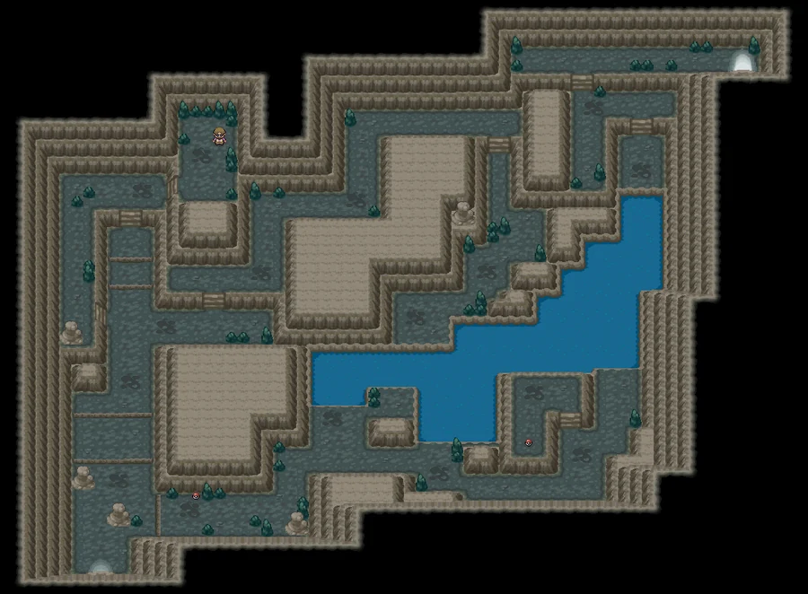
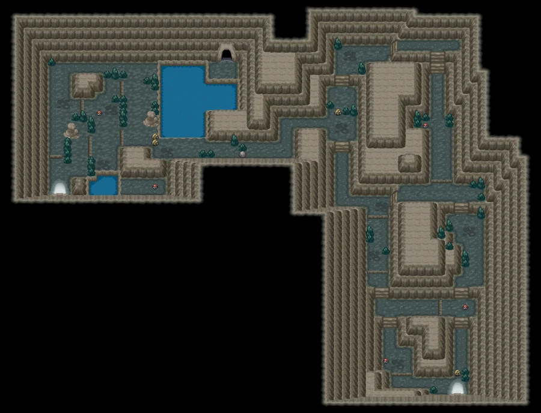
黑暗洞穴是在地区东部地下延伸的漆黑洞窟网。虽然最早从31号道路就能进入，但没有冲浪、怪力和碎岩这几个野外招式根本走不通，没有闪光也很难走。45号道路和46号道路上还有其他入口。
可遇到的宝可梦
 超音蝠洞窟 · Lv.23 · 30%
超音蝠洞窟 · Lv.23 · 30%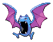
大嘴蝠洞窟 · Lv.23 · 5%- 小拳石洞窟 · Lv.23 · 30%
- 隆隆石洞窟 · Lv.25 · 20%
 果然翁洞窟 · Lv.20, 25 · 15%
果然翁洞窟 · Lv.20, 25 · 15%- 冲浪
- 鲤鱼王冲浪 · Lv.2-20 · 100%
- 钓鱼
- 鲤鱼王破旧钓竿 · Lv.10 · 85%
 角金鱼破旧钓竿 · Lv.10 · 15%
角金鱼破旧钓竿 · Lv.10 · 15%- 角金鱼好钓竿 · Lv.20 · 60%
- 鲤鱼王好钓竿 · Lv.20 · 40%
- 超音蝠洞窟 · Lv.2-4 · 39%
- 小拳石洞窟 · Lv.2-4 · 60%
 土龙弟弟洞窟 · Lv.4 · 1%
土龙弟弟洞窟 · Lv.4 · 1%- 冲浪
- 鲤鱼王冲浪 · Lv.2-20 · 100%
- 钓鱼
- 鲤鱼王破旧钓竿 · Lv.10 · 85%
- 角金鱼破旧钓竿 · Lv.10 · 15%
- 角金鱼好钓竿 · Lv.20 · 60%
- 鲤鱼王好钓竿 · Lv.20 · 40%
- 碎岩
- 土龙弟弟碎岩 · Lv.4-8 · 80%
- 小拳石碎岩 · Lv.8-14 · 20%
道具
- 东北洞室
- ＰＰ多项小补剂从北数第一道楼梯南边的死胡同（隐藏道具）
- 活力碎片东南岩脊上（需要特殊能力）
- 招式学习器54（点到为止）西南的台阶上（需要特殊能力）
- 黑色眼镜西北角的男人给予（需要特殊能力）
 活力块可疑男人西北边，左数第二根石笋上（隐藏道具，需要特殊能力）
活力块可疑男人西北边，左数第二根石笋上（隐藏道具，需要特殊能力） 厉害伤药西南区域，洞口东北边一块小岩石上（隐藏道具，需要特殊能力）
厉害伤药西南区域，洞口东北边一块小岩石上（隐藏道具，需要特殊能力）- 西南洞室
 伤药31号道路入口东北边
伤药31号道路入口东北边 精灵球31号道路入口东北边，东边那组台阶上突出的一小块岩石上（隐藏道具）
精灵球31号道路入口东北边，东边那组台阶上突出的一小块岩石上（隐藏道具）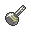
黑色玻璃哨31号道路入口东边的死胡同（需要特殊能力）- 厉害伤药东北区域，最北边台阶附近（需要特殊能力）
 ＰＰ单项全补剂中东部区域，两根石笋之间的洞壁上（隐藏道具，需要特殊能力）
ＰＰ单项全补剂中东部区域，两根石笋之间的洞壁上（隐藏道具，需要特殊能力）- 万灵药东南区域，46号道路入口北边（需要特殊能力）
 要害攻击东南区域，46号道路入口西偏北（需要特殊能力）
要害攻击东南区域，46号道路入口西偏北（需要特殊能力）
东北洞室
往西走下两道楼梯，然后用冲浪继续往南。拿东南岩脊上的活力碎片，再沿水边往西，在一道台阶上找到招式学习器54（点到为止）。往回走一点，往北游过水面，再沿岩脊往西走。去西北角会看到一个可疑的男人；你的出现吓了他一跳，他送你一副黑色眼镜，让你忘了在这里见过他。从这里往南跳下几道台阶，就到了洞窟的西边洞室。
西南洞室
往西走，如果还没拿，两组台阶之间的空地上有一个伤药。接着用冲浪渡过南边的小水池，拿黑色玻璃哨。之后用碎岩或冲浪往东，再用怪力继续前进。再敲碎一块岩石，绕过东北角拿厉害伤药。跳下台阶继续往南拿万灵药，再往西南拿要害攻击。去46号道路的出口在南边。
↓ 下一站：46号道路
46号道路
46号道路连接45号道路和29号道路。从烟墨市延伸下来的崎岖山路到这里就结束了，山地变成了丘陵。黑暗洞穴入口西边一片僻静的草地上长着几棵球果树。
训练家
- 野营男 Ted₽272
可能和 Erin 进行双打对战 猴怪 Lv.17
猴怪 Lv.17 - 野营女 Erin₽224
可能和 Ted 进行双打对战 小火马 Lv.17
小火马 Lv.17 走路草 Lv.14
走路草 Lv.14 - 登山男 Bailey₽416小拳石 Lv.13小拳石 Lv.13小拳石 Lv.13小拳石 Lv.13小拳石 Lv.13
可遇到的宝可梦
 小拉达草丛 · Lv.2, 4 · 早 25% · 日 25% · 夜 55%
小拉达草丛 · Lv.2, 4 · 早 25% · 日 25% · 夜 55%- 烈雀草丛 · Lv.2-3 · 早 35% · 日 35% · 夜 0%
- 小拳石草丛 · Lv.2-3 · 早 40% · 日 40% · 夜 45%
- 头锤（A 组树）
- 烈雀头锤 · Lv.2-3 · 50%
- 赫拉克罗斯头锤 · Lv.2-3 · 30%
- 长尾怪手头锤 · Lv.2-3 · 20%
- 头锤（B 组树）
- 烈雀头锤 · Lv.4-5 · 80%
- 长尾怪手头锤 · Lv.4-5 · 20%
道具
- 绿球果黑暗洞穴入口西边，东边那棵树上（每天一次）
 黄球果黑暗洞穴入口西边，西边那棵树上（每天一次）
黄球果黑暗洞穴入口西边，西边那棵树上（每天一次）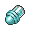
速度强化中西部区域，野营男 Ted 和野营女 Erin 附近- 特攻增强剂第二次再战野营女 Erin 并获胜后由她给予
↓ 本篇到此结束：继续下一页
原文：Bulbapedia《Walkthrough:Pokémon HeartGold and SoulSilver/Part 13》（修订版本 4641286，），作者见原文页面历史。本页由 Eli 的杂货间翻译为中文，并有改动（重新排版、精简部分图注）。原文与译文均以 CC BY-NC-SA 2.5 授权。配图来自原站，版权归原作者与游戏厂商；地图截图来自 Bulbagarden Archives，游戏画面版权归 Nintendo / Game Freak / The Pokémon Company。